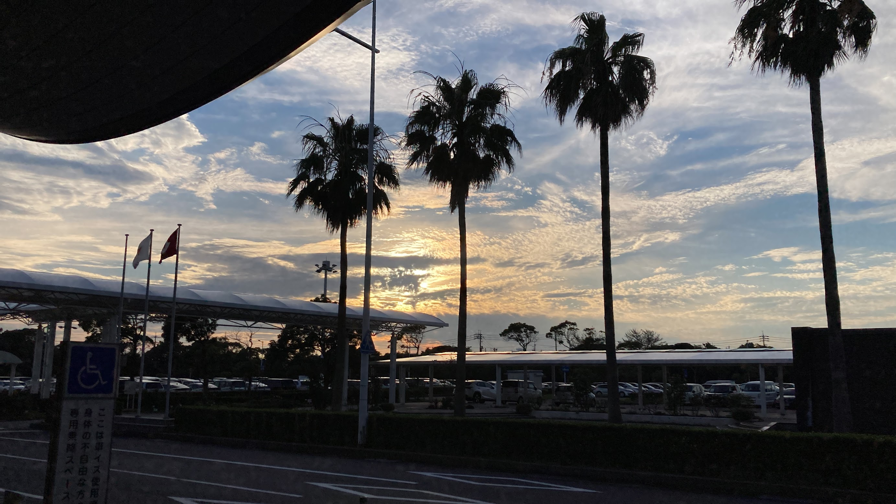

Nature in Okayama
Hills above the sea, quiet islands and open highland. All of it is within a day trip of the main cities.

Where to go.
Tap a place to read more.
Wide pastures and dairy cows under the mountains. Cool in summer, good for a long walk.
The highest mountain in the Chugoku region, at 1,729 metres. It stands just over the border in Tottori, and you can see it from Hiruzen Highland.
A hill with a wide view over the islands and the Seto-Ohashi Bridge. Best near sunset.
A sunny coastal town with an olive park, often compared to the Mediterranean.
A small, slow island reached by ferry. Walk or cycle and take your time.
A landscaped garden of lawns, ponds and trees beside the river. Calm in every season.
A hot spring village in the mountains of northern Okayama. It is known for Sunayu, an open-air bath beside the Yubara Dam.